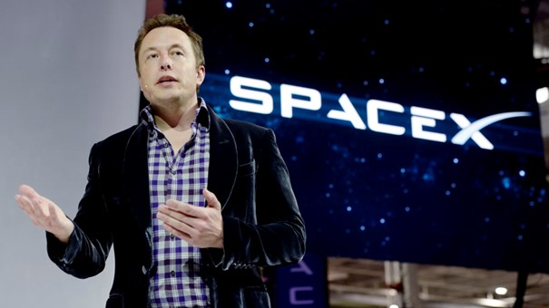

SpaceX, or Space Exploration Technologies Corp., was founded by Elon Musk on March 14, 2002. Since its inception, the company has rapidly evolved and made significant contributions to the space industry. Here is an overview of the history of SpaceX up to my knowledge cutoff date in September 2021: 1. Founding and Early Goals (2002-2004): Elon Musk founded SpaceX with the primary goal of reducing the cost of space exploration and making humanity a multi-planetary species. The company initially focused on developing a small, privately-funded rocket called the Falcon 1. 2. First Falcon 1 Launch (2006): On March 24, 2006, SpaceX's Falcon 1 became the first privately-funded, liquid-fueled rocket to reach orbit. This marked a significant milestone in the commercial space industry. 3. Dragon Development (2008-2010): SpaceX began work on the Dragon spacecraft, designed for cargo and crew missions to the International Space Station (ISS). The first successful Dragon mission to the ISS took place in December 2010. 4. Commercial Resupply Services (CRS) (2012-2020): SpaceX signed a contract with NASA for the Commercial Resupply Services program, leading to multiple successful cargo missions to the ISS using the Dragon spacecraft. SpaceX became the first commercial company to visit the ISS. 5. Crewed Spaceflight (2015-2020): SpaceX's Crew Dragon spacecraft was developed to transport astronauts to the ISS. In May 2020, SpaceX successfully launched NASA astronauts Bob Behnken and Doug Hurley on the Demo-2 mission, marking the first crewed orbital launch by a private company. 6. Falcon 9 Reusability (2015-2021): SpaceX pioneered the concept of reusability in the space industry. It successfully landed and reused the first stage of its Falcon 9 rocket multiple times, significantly reducing launch costs. 7. Falcon Heavy (2018): SpaceX launched the Falcon Heavy, the most powerful operational rocket in the world. The maiden flight included the iconic launch of Elon Musk's Tesla Roadster into space. 8. Starlink Satellite Constellation (2019-2021): SpaceX began deploying its Starlink satellite constellation to provide global internet coverage. Hundreds of Starlink satellites were launched using Falcon 9 rockets. 9. Artemis Lunar Program (2020): SpaceX was selected by NASA to provide a human landing system for the Artemis program, which aims to return astronauts to the Moon. The lunar lander will be based on the Starship spacecraft. 10. Starship Development (2020-2021): SpaceX actively developed its Starship spacecraft, intended for a wide range of missions, including missions to Mars and beyond. Multiple Starship prototypes underwent testing. 11. Starship SN15 (2021): Starship SN15 marked a major success for SpaceX, as it completed a high-altitude flight and a safe landing, demonstrating significant progress in Starship development. 12. Space Tourism and Commercial Missions: SpaceX announced plans for space tourism missions and continues to carry out numerous commercial satellite deployments and space science missions. SpaceX has played a pivotal role in reshaping the space industry, focusing on innovation, reusability, and the goal of interplanetary colonization. Its achievements have advanced the cause of space exploration and have made significant contributions to both scientific research and commercial ventures in space. Please note that developments have continued beyond my knowledge cutoff date in September 2021.
